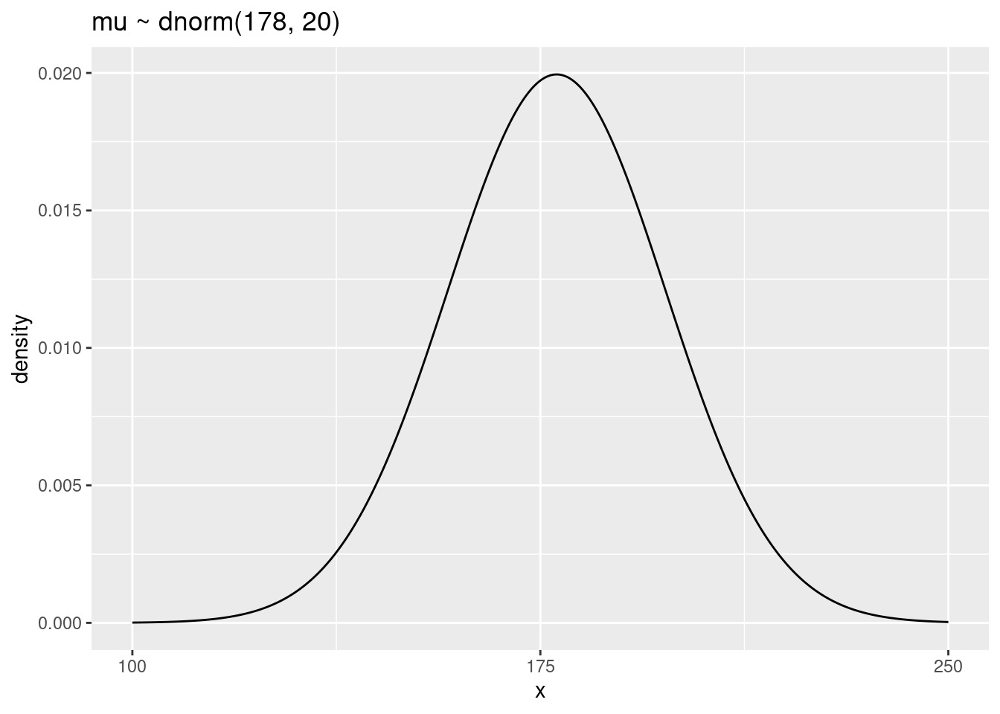
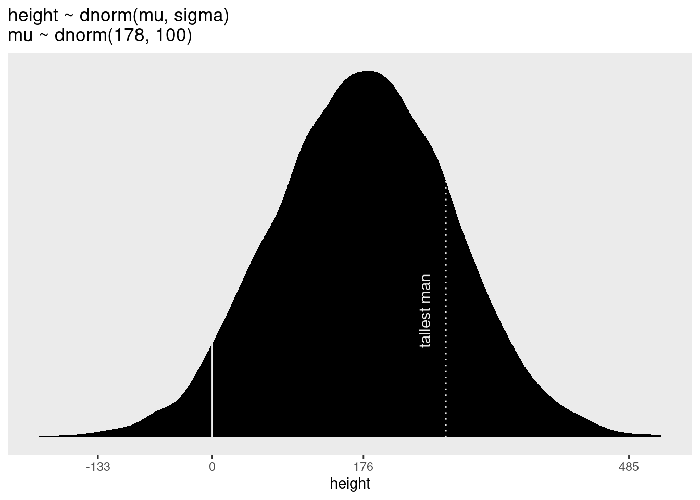
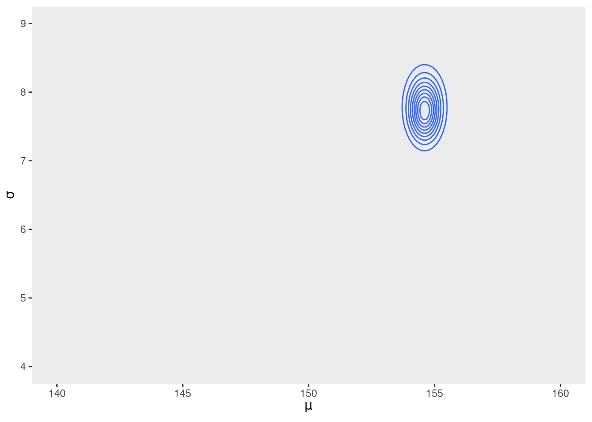
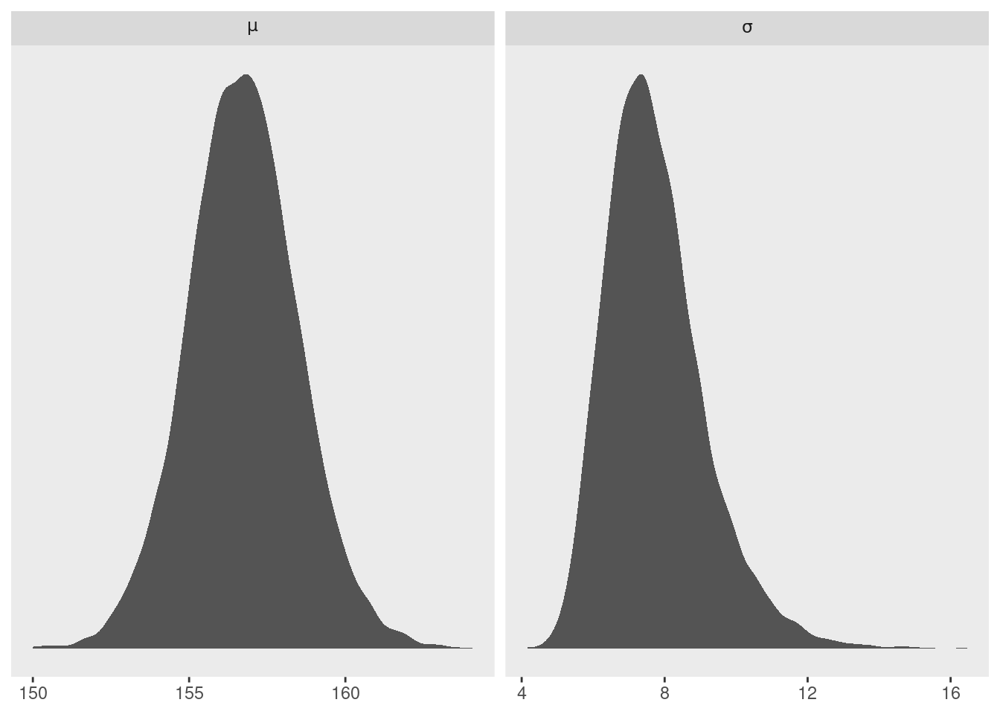
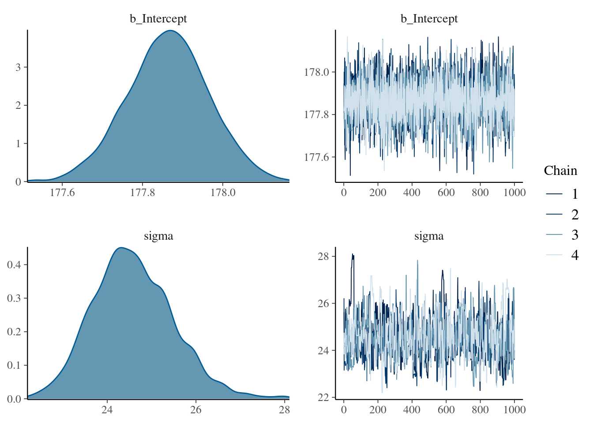

4.3 Gaussian model of height
Before we add a predictor variable, we want to model the outcome variable as a Gaussian distribution. There are an infinite number of possible Gaussian distributions based on infinite combinations of \(\mu\) and \(\sigma\). We want our Bayesian machine to consider every possible distribution, and rank them by posterior plausibility.
4.3.1 The data
These height data come from Nancy Howell’s data. Howell1 is a simplified dataset. We’ll focus just on adult heights at the moment.
data(Howell1)
d <- Howell1d %>%
str()## 'data.frame': 544 obs. of 4 variables:
## $ height: num 152 140 137 157 145 ...
## $ weight: num 47.8 36.5 31.9 53 41.3 ...
## $ age : num 63 63 65 41 51 35 32 27 19 54 ...
## $ male : int 1 0 0 1 0 1 0 1 0 1 ...rethinking::precis(d)## mean sd 5.5% 94.5% histogram
## height 138.2635963 27.6024476 81.108550 165.73500 ▁▁▁▁▁▁▁▂▁▇▇▅▁
## weight 35.6106176 14.7191782 9.360721 54.50289 ▁▂▃▂▂▂▂▅▇▇▃▂▁
## age 29.3443934 20.7468882 1.000000 66.13500 ▇▅▅▃▅▂▂▁▁
## male 0.4724265 0.4996986 0.000000 1.00000 ▇▁▁▁▁▁▁▁▁▇head(d$height)## [1] 151.765 139.700 136.525 156.845 145.415 163.830Filter for adults:
d2 = d[d$age >= 18, ]4.3.2 The model
Here’s the distribution of height data. \(h\) is distributed normally.

There’s nothing special about the particular letters used. But it’s important to be able to read this. Now we have three variables. One is observed, and two have not. We have to infrer them from \(h\).

Because this is Bayesian, they have prior distributions. Using 187 cm (height of Richard) as the prior. Standard deviation is on the mean. 20 is very generous. Then for sigma, uniform 50.
Whatever the prior, it’s a very good idea to plot your priors:
p1 <-
tibble(x = seq(from = 100, to = 250, by = .1)) %>%
ggplot(aes(x = x, y = dnorm(x, mean = 178, sd = 20))) +
geom_line() +
scale_x_continuous(breaks = seq(from = 100, to = 250, by = 75)) +
labs(title = "mu ~ dnorm(178, 20)",
y = "density")
p1
The \(\sigma\) prior is a truly flat prior.
p2 <-
tibble(x = seq(from = -10, to = 60, by = .1)) %>%
ggplot(aes(x = x, y = dunif(x, min = 0, max = 50))) +
geom_line() +
scale_x_continuous(breaks = c(0, 50)) +
scale_y_continuous(NULL, breaks = NULL) +
ggtitle("sigma ~ dunif(0, 50)")
p2
A standard deviation like \(\sigma\) must be positive, so bounding it at zero makes sense.

Before your model has seen the data. This is not p-hacking, because we’re not using the data. We’re using scientific information. All you have to sample values.
n <- 1e4
set.seed(4)
sim <-
tibble(sample_mu = rnorm(n, mean = 178, sd = 20),
sample_sigma = runif(n, min = 0, max = 50)) %>%
mutate(height = rnorm(n, mean = sample_mu, sd = sample_sigma))
p3 <- sim %>%
ggplot(aes(x = height)) +
geom_density(fill = "grey33") +
scale_x_continuous(breaks = c(0, 73, 178, 283)) +
scale_y_continuous(NULL, breaks = NULL) +
ggtitle("height ~ dnorm(mu, sigma)") +
theme(panel.grid = element_blank())
p3
This is not a normal distribution. It’s a t-distribution because you have uncertainty about variance, which gives it fat tails. There are some really really tall individuals in this prior. But at least we don’t have any negative heights.
Let’s see the implied heights with a flatter and less informative prior for \(\mu\).:
# simulate
set.seed(4)
sim <-
tibble(sample_mu = rnorm(n, mean = 178, sd = 100),
sample_sigma = runif(n, min = 0, max = 50)) %>%
mutate(height = rnorm(n, mean = sample_mu, sd = sample_sigma))
# compute the values we'll use to break on our x axis
breaks <-
c(mean(sim$height) - 3 * sd(sim$height), 0, mean(sim$height), mean(sim$height) + 3 * sd(sim$height)) %>%
round(digits = 0)
# this is just for aesthetics
text <-
tibble(height = 272 - 25,
y = .0013,
label = "tallest man",
angle = 90)
# plot
p4 <-
sim %>%
ggplot(aes(x = height)) +
geom_density(fill = "black", size = 0) +
geom_vline(xintercept = 0, color = "grey92") +
geom_vline(xintercept = 272, color = "grey92", linetype = 3) +
geom_text(data = text,
aes(y = y, label = label, angle = angle),
color = "grey92") +
scale_x_continuous(breaks = breaks) +
scale_y_continuous(NULL, breaks = NULL) +
ggtitle("height ~ dnorm(mu, sigma)\nmu ~ dnorm(178, 100)") +
theme(panel.grid = element_blank())
p4
(p1 + xlab("mu") | p2 + xlab("sigma")) / (p3 | p4)
Before it even sees the data, it expects 4% of people to have negative height, and also some giants. Does it matter? In this case we have so much data that the silly prior is harmless. But that won’t always be the case. There are plenty of inference problems for which the data alone are not sufficient, no matter how numerous. Bayes lets us proceed in these cases, but only if we use our scientific knowledge to construct sensible priors. The important thing is that your prior not be based on the values in the data, but only on what you know about the data before you see it.
Let’s use a different prior.

Typical linear regression priors are flat. They’re bad new because they create impossible outcomes before you even see the data.
4.3.3 Grid approximation of the posterior distribution

Once you start working with mixed models, the priors have a greater effect, so it’s good to get used to prior predictive simulation now. We’ll calculate the grid and the posterior probability. How? Multiply the observed height conditional on the mu and sigma at that point. Times the prior probability of that mu and sigma. They code to do this is some loops.
100x100 you start to see the Gaussian hill. Gradually the values become increasingly implausible. What we do here is draw samples.
Here are the guts of the golem:
d2 <-
d %>%
filter(age >= 18)
n <- 200
d_grid <-
# we'll accomplish with `tidyr::crossing()` what McElreath did with base R `expand.grid()`
tidyr::crossing(mu = seq(from = 140, to = 160, length.out = n),
sigma = seq(from = 4, to = 9, length.out = n))
glimpse(d_grid)## Rows: 40,000
## Columns: 2
## $ mu <dbl> 140, 140, 140, 140, 140, 140, 140, 140, 140, 140, 140, 140, 140,…
## $ sigma <dbl> 4.000000, 4.025126, 4.050251, 4.075377, 4.100503, 4.125628, 4.15…d_grid contains every combination of mu and sigma across their specified values.
Create custom function:
grid_function <- function(mu, sigma) {
dnorm(d2$height, mean = mu, sd = sigma, log = T) %>%
sum()
}d_grid <-
d_grid %>%
mutate(log_likelihood = purrr::map2(mu, sigma, grid_function)) %>%
unnest(log_likelihood) %>%
mutate(prior_mu = dnorm(mu, mean = 178, sd = 20, log = T),
prior_sigma = dunif(sigma, min = 0, max = 50, log = T)) %>%
mutate(product = log_likelihood + prior_mu + prior_sigma) %>%
mutate(probability = exp(product - max(product)))
head(d_grid)## # A tibble: 6 × 7
## mu sigma log_likelihood prior_mu prior_sigma product probability
## <dbl> <dbl> <dbl> <dbl> <dbl> <dbl> <dbl>
## 1 140 4 -3813. -5.72 -3.91 -3822. 0
## 2 140 4.03 -3778. -5.72 -3.91 -3787. 0
## 3 140 4.05 -3743. -5.72 -3.91 -3753. 0
## 4 140 4.08 -3709. -5.72 -3.91 -3719. 0
## 5 140 4.10 -3676. -5.72 -3.91 -3686. 0
## 6 140 4.13 -3644. -5.72 -3.91 -3653. 0Inspect the posterior distribution
d_grid %>%
ggplot(aes(x = mu, y = sigma, z = probability)) +
geom_contour() +
labs(x = expression(mu),
y = expression(sigma)) +
coord_cartesian(xlim = range(d_grid$mu),
ylim = range(d_grid$sigma)) +
theme(panel.grid = element_blank())
d_grid %>%
ggplot(aes(x = mu, y = sigma, fill = probability)) +
geom_raster(interpolate = T) +
scale_fill_viridis_c(option = "B") +
labs(x = expression(mu),
y = expression(sigma)) +
theme(panel.grid = element_blank())
4.3.4 Sampling from the posterior
set.seed(4)
d_grid_samples <-
d_grid %>%
sample_n(size = 1e4, replace = T, weight = probability)
d_grid_samples %>%
ggplot(aes(x = mu, y = sigma)) +
geom_point(size = .9, alpha = 1/15) +
scale_fill_viridis_c() +
labs(x = expression(mu[samples]),
y = expression(sigma[samples])) +
theme(panel.grid = element_blank())
d_grid_samples %>%
pivot_longer(mu:sigma) %>%
ggplot(aes(x = value)) +
geom_density(fill = "grey33") +
scale_y_continuous(NULL, breaks = NULL) +
xlab(NULL) +
theme(panel.grid = element_blank()) +
facet_wrap(~ name, scales = "free", labeller = label_parsed)
Summarise the widths:
d_grid_samples %>%
pivot_longer(mu:sigma) %>%
group_by(name) %>%
tidybayes::mode_hdi(value)## # A tibble: 2 × 7
## name value .lower .upper .width .point .interval
## <chr> <dbl> <dbl> <dbl> <dbl> <chr> <chr>
## 1 mu 155. 154. 155. 0.95 mode hdi
## 2 sigma 7.82 7.14 8.30 0.95 mode hdi
Once you have the samples, you just work with the data frame. You can look at cross-sections of this.
Note that this isn’t perfectly symmetrical for sigma - the right tail is longer. This is almost always true for SD parameters. Why? Because you know something about the SD before you see the data: you know it’s positive. So you always have more uncertainty on the higher end.
Let’s analyze only 20 of the heights from the height data to reveal this issue.
set.seed(4)
(d3 <- sample(d2$height, size = 20))## [1] 147.3200 154.9400 168.9100 156.8450 165.7350 151.7650 165.7350 156.2100
## [9] 144.7800 154.9400 151.1300 147.9550 149.8600 162.5600 161.9250 164.4650
## [17] 160.9852 151.7650 163.8300 149.8600Now repeat the code from the previous subsection, modified to focus on the 20 heights in d3 rather than the original data.
n <- 200
# note we've redefined the ranges of `mu` and `sigma`
d_grid <-
crossing(mu = seq(from = 150, to = 170, length.out = n),
sigma = seq(from = 4, to = 20, length.out = n))
# amend the grid function
grid_function <- function(mu, sigma) {
dnorm(d3, mean = mu, sd = sigma, log = T) %>%
sum()
}
# make the posterior
d_grid <-
d_grid %>%
mutate(log_likelihood = map2_dbl(mu, sigma, grid_function)) %>%
mutate(prior_mu = dnorm(mu, mean = 178, sd = 20, log = T),
prior_sigma = dunif(sigma, min = 0, max = 50, log = T)) %>%
mutate(product = log_likelihood + prior_mu + prior_sigma) %>%
mutate(probability = exp(product - max(product)))
# `sample_n()` and plot
set.seed(4)
d_grid_samples <-
d_grid %>%
sample_n(size = 1e4, replace = T, weight = probability)
d_grid_samples %>%
ggplot(aes(x = mu, y = sigma)) +
geom_point(size = .9, alpha = 1/15) +
labs(x = expression(mu[samples]),
y = expression(sigma[samples])) +
theme(panel.grid = element_blank())
And the updated densities..
d_grid_samples %>%
pivot_longer(mu:sigma) %>%
ggplot(aes(x = value)) +
geom_density(fill = "grey33", size = 0) +
scale_y_continuous(NULL, breaks = NULL) +
xlab(NULL) +
theme(panel.grid = element_blank()) +
facet_wrap(~ name, scales = "free", labeller = label_parsed)
Now you can see the posterior for \(\sigma\) is not Gaussian, but as a long tail towards higher values.
4.3.5 Finding the posterior distribution with quap
![Grid approximation is useful for teaching, but now we'll do a fancy approximation of it so we can go to higher dimensions. THat approximation asserts that the distribution is normal for every parameter. But once you get to generalised linear models it's a bad approximation. How does this work? You need two numbers: mean and SD. For multi-dimensional Gaussians, you also need a covariance matrix for the parameters. How do you do it? You climb the hill. It doesn't know what the hill is, but it knows what is up and down. So it tries to find the peak. When it gets to the peak, it needs to measure the curvature of the peak. And that's all it needs to approxi ate the curve. Often called the LaPlace approximation.](slides/L03/32.png)
Grid approximation is useful for teaching, but now we’ll do a fancy approximation of it so we can go to higher dimensions. THat approximation asserts that the distribution is normal for every parameter. But once you get to generalised linear models it’s a bad approximation. How does this work? You need two numbers: mean and SD. For multi-dimensional Gaussians, you also need a covariance matrix for the parameters. How do you do it? You climb the hill. It doesn’t know what the hill is, but it knows what is up and down. So it tries to find the peak. When it gets to the peak, it needs to measure the curvature of the peak. And that’s all it needs to approxi ate the curve. Often called the LaPlace approximation.

quap works by making the formula lists. Typically there’s some abbreviated forms. You’ll have to write how every parameter multiplies every variable.
b4.1 <-
brm(data = d2,
family = gaussian,
height ~ 1,
prior = c(prior(normal(178, 20), class = Intercept),
prior(uniform(0, 50), class = sigma)),
iter = 31000, warmup = 30000, chains = 4, cores = 4,
seed = 4,
file = "fits/b04.01")
# HMC tends to work better when you default to an exponential or half Cauchy for sigma
b4.1_hc <-
brms::brm(data = d2,
family = gaussian,
height ~ 1,
prior = c(brms::prior(normal(178, 20), class = Intercept),
# the magic lives here
brms::prior(cauchy(0, 1), class = sigma)),
iter = 2000, warmup = 1000, chains = 4, cores = 4,
seed = 4,
file = "fits/b04.01_hc")Plug in the parameters and plug it into quap.

quap translates it into a statement about a log probability of the combinations of data, then passes it to the hill-finding algorithm built into R called optim, which passes it back as a list of means and a covariance matrix, which is sufficient to create a posterior distribution.
precis is minimalistic compared to summary. Provides the 89% compatibility intervals.
These numbers provide Gaussian approximations for each parameter’s marginal distribution, meaning the plausibility of each value of \(\mu\) after averaging over the plausibilities of each value of \(\sigma\).
quap estimates the posterior by climbing it like a hill. To do this, it has to start climbing someplace, at some combination of parameter values. But it’s possible to specify a starting value
plot(b4.1_hc)
Get the model summary:
print(b4.1_hc)## Family: gaussian
## Links: mu = identity; sigma = identity
## Formula: height ~ 1
## Data: d2 (Number of observations: 352)
## Samples: 4 chains, each with iter = 2000; warmup = 1000; thin = 1;
## total post-warmup samples = 4000
##
## Population-Level Effects:
## Estimate Est.Error l-95% CI u-95% CI Rhat Bulk_ESS Tail_ESS
## Intercept 154.61 0.41 153.81 155.42 1.00 3833 2967
##
## Family Specific Parameters:
## Estimate Est.Error l-95% CI u-95% CI Rhat Bulk_ESS Tail_ESS
## sigma 7.74 0.29 7.20 8.35 1.00 3511 2853
##
## Samples were drawn using sampling(NUTS). For each parameter, Bulk_ESS
## and Tail_ESS are effective sample size measures, and Rhat is the potential
## scale reduction factor on split chains (at convergence, Rhat = 1).If you want the 89% intervals like rethinking:
summary(b4.1_hc, prob = .89)## Family: gaussian
## Links: mu = identity; sigma = identity
## Formula: height ~ 1
## Data: d2 (Number of observations: 352)
## Samples: 4 chains, each with iter = 2000; warmup = 1000; thin = 1;
## total post-warmup samples = 4000
##
## Population-Level Effects:
## Estimate Est.Error l-89% CI u-89% CI Rhat Bulk_ESS Tail_ESS
## Intercept 154.61 0.41 153.96 155.27 1.00 3833 2967
##
## Family Specific Parameters:
## Estimate Est.Error l-89% CI u-89% CI Rhat Bulk_ESS Tail_ESS
## sigma 7.74 0.29 7.29 8.23 1.00 3511 2853
##
## Samples were drawn using sampling(NUTS). For each parameter, Bulk_ESS
## and Tail_ESS are effective sample size measures, and Rhat is the potential
## scale reduction factor on split chains (at convergence, Rhat = 1).Let’s splice in a more informative prior for \(\mu\) so you can see the effect.
b4.2 <-
brm(data = d2,
family = gaussian,
height ~ 1,
prior = c(prior(normal(178, 0.1), class = Intercept),
prior(uniform(0, 50), class = sigma)),
iter = 2000, warmup = 1000, chains = 4, cores = 4,
seed = 4,
file = "fits/b04.02")
plot(b4.2)
summary(b4.2)## Family: gaussian
## Links: mu = identity; sigma = identity
## Formula: height ~ 1
## Data: d2 (Number of observations: 352)
## Samples: 4 chains, each with iter = 2000; warmup = 1000; thin = 1;
## total post-warmup samples = 4000
##
## Population-Level Effects:
## Estimate Est.Error l-95% CI u-95% CI Rhat Bulk_ESS Tail_ESS
## Intercept 177.86 0.10 177.66 178.06 1.00 3467 2724
##
## Family Specific Parameters:
## Estimate Est.Error l-95% CI u-95% CI Rhat Bulk_ESS Tail_ESS
## sigma 24.59 0.91 22.95 26.54 1.01 483 422
##
## Samples were drawn using sampling(NUTS). For each parameter, Bulk_ESS
## and Tail_ESS are effective sample size measures, and Rhat is the potential
## scale reduction factor on split chains (at convergence, Rhat = 1).Compare the two:
rbind(summary(b4.1_hc)$fixed,
summary(b4.2)$fixed)## Estimate Est.Error l-95% CI u-95% CI Rhat Bulk_ESS Tail_ESS
## Intercept 154.6133 0.4100253 153.8146 155.4213 1.000225 3833 2967
## Intercept 177.8637 0.1014405 177.6609 178.0614 1.000384 3467 27244.3.6 Sampling from a quapbrm() fit
To this the matrix of variances and covariances among all paris of parameters:
post <- brms::posterior_samples(b4.1_hc) %>%
dplyr::select(b_Intercept, sigma, lp__)
head(post)## b_Intercept sigma lp__
## 1 154.2645 7.992651 -1227.255
## 2 154.6744 7.427472 -1227.075
## 3 154.7472 7.410110 -1227.193
## 4 154.7948 8.470115 -1229.452
## 5 154.2154 7.940177 -1227.219
## 6 154.7131 7.744806 -1226.553This is a Variant-covariance Matrix. It is the multi-dimensional glue of a quadratic approximation, because it tells us how each parameter relates to every other parameter in the posterior distribution.
# NOw `select()` the columns and feed them into `cov()`
dplyr::select(post, b_Intercept:sigma) %>%
cov()## b_Intercept sigma
## b_Intercept 0.168120762 -0.005250413
## sigma -0.005250413 0.086979181# variances
dplyr::select(post, b_Intercept:sigma) %>%
cov() %>%
diag()## b_Intercept sigma
## 0.16812076 0.08697918# correlation
post %>%
dplyr::select(b_Intercept, sigma) %>%
cor()## b_Intercept sigma
## b_Intercept 1.00000000 -0.04341854
## sigma -0.04341854 1.00000000
post %>%
pivot_longer(-lp__) %>%
group_by(name) %>%
summarise(mean = mean(value),
sd = sd(value),
`2.5%` = quantile(value, probs = .025),
`97.5%` = quantile(value, probs = .975)) %>%
mutate_if(is.numeric, round, digits = 2) %>%
mutate(histospark = c(histospark(post$b_Intercept), histospark(post$sigma)))## # A tibble: 2 × 6
## name mean sd `2.5%` `97.5%` histospark
## <chr> <dbl> <dbl> <dbl> <dbl> <chr>
## 1 b_Intercept 155. 0.41 154. 155. ▁▁▅▇▂▁▁
## 2 sigma 7.74 0.29 7.2 8.35 ▁▁▂▅▇▇▃▁▁▁▁
To find out what it means, you draw some lines. I think of this tool as a scaffold so you can learn how to do modelling. But after you can use packages that use abbreviations. But it’s important to learn how to build them. You’ll come to appreciate how explicit it is.
You want to graduate beyond quap because for generalised linear modelling it becomes dangerous.